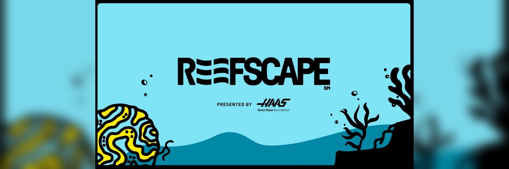

Project
Develop a robot capable of collecting large cylinders and spheres, placing them on different targets and hanging them on a structure, operated by remote control and with system status monitoring.
A mobile robot was designed and built with a structural chassis optimized for handling bulky objects. The system included electric motors, control electronics, and mechanical capture and positioning mechanisms. Conceptual design, mechanical and electronic integration, and functional tests were carried out until reliable operation was achieved during the competition.
Participation in robot design, mechanical chassis assembly, electronics integration, and functional testing.
The robot completed the required functions of collection, object placement, and suspension, participating satisfactorily in the FIRST 2025 competition.